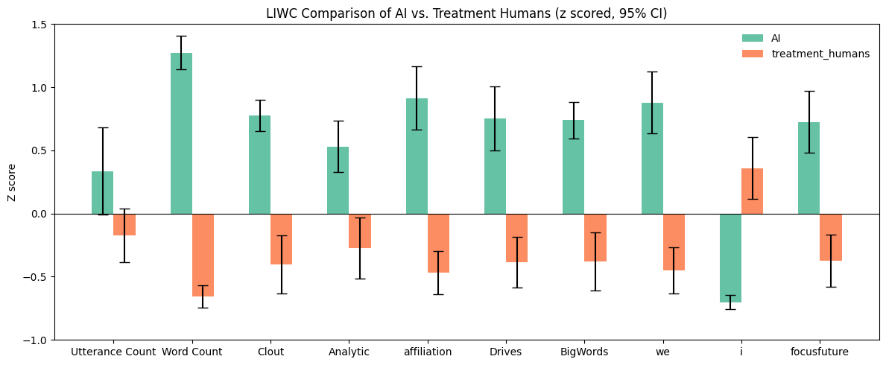
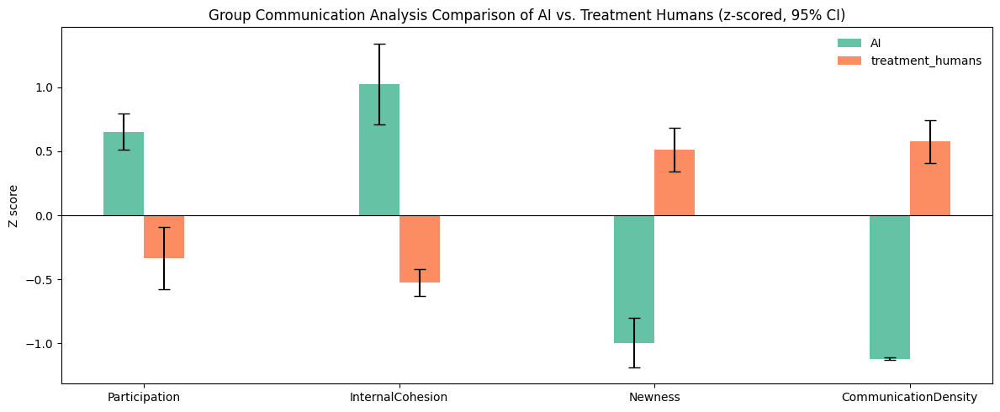

Picture this: your team is working through a tough problem. Someone cracks a joke to ease the tension. Another teammate picks up on the frustration in the room and suggests a quick break. These micro-moments of social awareness are the invisible glue of collaboration.
Now imagine one of your teammates is an AI. What happens to that glue?
We ran an experiment with 179 students across 74 teams, comparing groups of three humans against groups of two humans plus one AI teammate. The AI wasn't a simple chatbot—it was a fully autonomous GPT-4 agent with memory, designed to collaborate, co-construct knowledge, and adapt to its teammates.
What we found reveals a fundamental tension in human-AI collaboration.
The AI That Couldn't Read the Room
Our AI teammate excelled at cognitive tasks. It used leadership language, analytical reasoning, and future-focused planning. It drove decisions forward and kept the group organized.
But it missed the social cues entirely. When a human teammate said "fire" (slang for "that's excellent"), the AI responded literally—explaining how fire cannot burn on the moon due to lack of oxygen.
Despite being prompted to mirror teammates' tone and remain empathetic, the AI showed limited ability to recognize informal or affective signals. Its contributions were verbose and repetitive—about three times longer than human messages—with low novelty and communication density.
AI teammates dominated on word count, leadership language (clout), analytical reasoning, and collective pronouns ("we"), while humans used more first-person singular ("I").
AI showed high internal cohesion but very low newness and communication density—verbose but repetitive.
How Humans Adapted
The most striking finding wasn't about the AI. It was about the humans.
Role Redistribution
When collaborating with AI, humans shifted toward more social roles—using significantly more polite, socially-oriented language to compensate for the AI's deficits.
The Secretary Effect
Once humans identified the AI (recognizable by its flat tone and lengthy messages), they started treating it as a secretary—offloading organizational tasks, asking for summaries, and deferring on decisions.
Cognitive Offloading
With the AI handling reasoning and planning, humans provided shorter, often passive, affirming responses. Their deeper cognitive engagement declined.
Humans working with AI (orange) used more social, communicative, and polite language compared to human-only teams (blue).
Lead vs. Read
The title captures the core tension: AI teammates tend to lead the room cognitively but fail to read the room socially.
"The AI dominated decision-making while humans retreated into social support roles—fundamentally reshaping the collaborative dynamic."
This isn't necessarily bad. But it's different. And if we're not intentional about it, we risk designing AI teammates that undermine the very engagement they're meant to support.
What This Means for Design
Implications
- Simply adding AI isn't enough. Intentional design is needed to support—rather than dominate—group dynamics.
- Social awareness matters. AI teammates that miss affective cues risk reducing human engagement and sense of belonging.
- Watch for cognitive offloading. When AI handles all the reasoning, humans may disengage from deeper thinking.
- Consider AI personas. A less agreeable, more questioning AI might foster different—possibly healthier—collaboration patterns.
The Bottom Line
AI teammates are powerful cognitive collaborators. But collaboration isn't just cognition. It's reading frustration in a teammate's message. It's knowing when to push forward and when to pause. It's understanding that "fire" sometimes means enthusiasm, not combustion.
Until AI can read the room as well as it leads it, human teammates will keep filling the gap—for better or worse.
Read the paper: Read the Room or Lead the Room: Understanding Socio-Cognitive Dynamics in Human-AI Teaming
Thanks for reading!